The information presented here is a summary of the vegetation data collected through the Long-Term Monitoring Network (LTMN) project. The ultimate aim of LTMN is to survey over long periods of time in order to distinguish between trends and the fluctuations inherent in the environment. We are starting to reach three surveys so trends may be starting to emerge. This form of report has been structured so that as each new survey is implemented, the data is added to this report and will be available rapidly after data collection. The content is also being updated and we would greatly appreciate any feedback on the kind of information that is most useful, which parts of the report are difficult to use and any site specific data to present (such as individual species or groups of species).
| Year | Earliest_date | Latest_date |
|---|---|---|
| 2011 | 12-Sep | 16-Sep |
| 2014 | 02-Aug | 07-Aug |
| 2018 | 07-Aug | 09-Aug |
The sites of the LTMN project have been chosen to represent key UK habitats. Individual plots are assigned a broad and priority habitat by the surveyor, and where this categorisation is missing, it is later filled by habitat experts using the available data from the plot.
Each circle on the map represents a plot or quadrat. The locations of the plots are fixed so that they can be revisited during each survey. The exact location is recorded using feno markers placed in the ground. Sometimes these are lost between surveys and in such cases, the coordinates are used to match the location using high accuracy GPS. This can mean that sometimes the plots move a couple of metres. In some cases, not all plots are surveyed each time, typically due to time restraints on the survey.
| BAP_broad | 2011 | 2014 | 2018 |
|---|---|---|---|
| Calcareous Grassland | 36 | 36 | 23 |
| Dwarf Shrub Heath | 6 | 6 | 5 |
| Dense Scrub | 5 | 5 | 0 |
| Broadleaved, Mixed and Yew Woodland | 3 | 3 | 0 |
| Total | 50 | 50 | 28 |
There are usually a mix of habitats on LTMN sites with certain habitats being more prominent. We aim to take 50 quadrats each survey which will be predominantly made up of key target habitats. Sites have been chosen to represent these specific habitats but due to the random sampling methods, there may be habitats which are not as important for the site included.
After the plant species data has been collected for each plot, it is processed using MAVIS software which uses the plants their frequency to categorise each plot into an NVC community. The communities have been grouped into NVC groups such as ‘Woodland and Scrub’ or ‘Calcareous Grassland’ and the plots are displayed with their group below. The confidence with which MAVIS has ascribed the plot to the NVC community can be seen by hovering the mouse over the data points on the map below along with the any NVC community classifications (community:confidence).
Each circle on the map represents a plot or quadrat. The locations of the plots are fixed so that they can be revisited during each survey. The exact location is recorded using feno markers placed in the ground. Sometimes these are lost between surveys and in such cases, the coordinates are used to match the location using high accuracy GPS. This can mean that sometimes the plots move a couple of metres. In some cases, not all plots are surveyed each time, typically due to time restraints on the survey.
| NVC_habitat | 2011 | 2014 | 2018 |
|---|---|---|---|
| Calcareous grassland (CG) | 15 | 14 | 15 |
| Woodland and scrub (W) | 10 | 12 | 3 |
| Mesotrophic grassland (MG) | 9 | 10 | 8 |
| Heath (H) | 8 | 6 | 4 |
| Calcifugus grassland and montane (U) | 5 | 4 | 2 |
| Vegetation of open habitats (OV) | 2 | 0 | 1 |
| Maritime cliff (MC) | 1 | 4 | 4 |
| FAILED | 0 | 0 | 1 |
| Total | 50 | 50 | 38 |
Within each larger NVC group of communities (i.e. H, CG, W), there are many differences between the communities (i.e. CG2, CG6). For each major NVC group, the individual NVC community split is displayed below over the years.
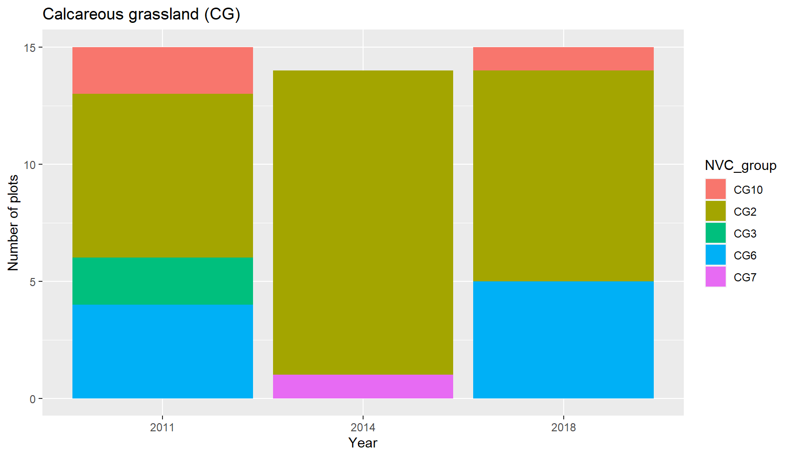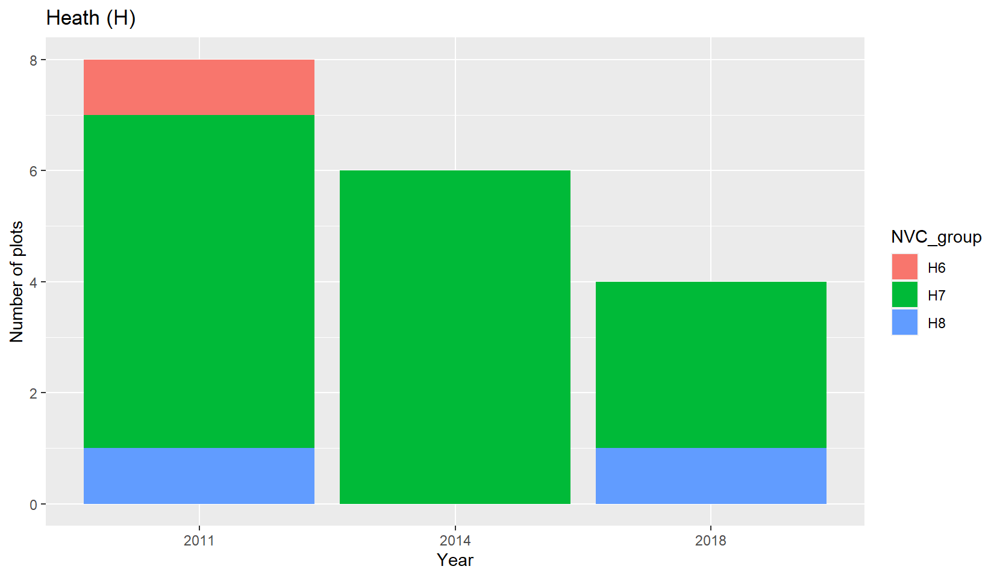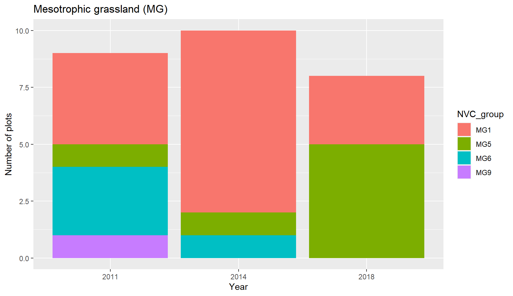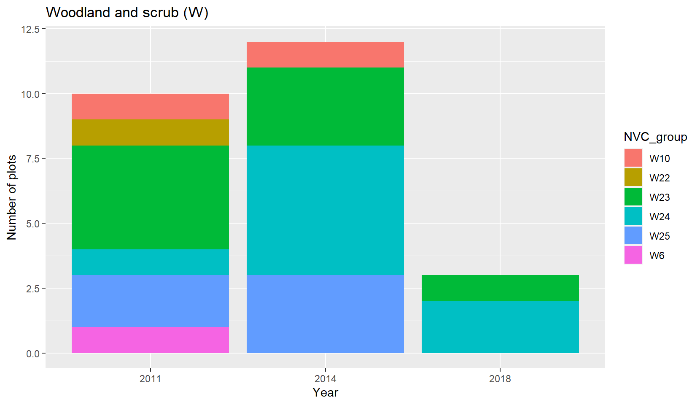
Species richness (the number of different species found in each plot) and species diversity (Simpson’s diversity index) are recorded and mapped onto the site. A darker shade of blue indicates a higher richness/diversity. Only plots from the most recent survey are included on this map.
Hover the mouse over each line to get details. Click on species in the legend to add and remove them from the view. Double click to isolate a species.
In these box and whisker diagrams, only the key habitats on the site are shown.
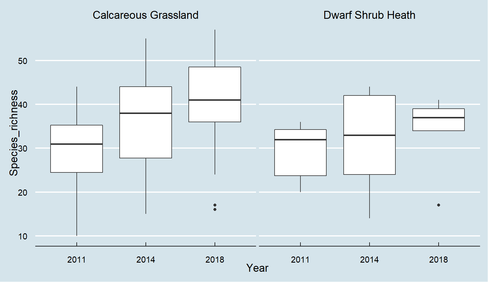
The centre line of the box is the median value across all plots designated as that habitat. The edges of the box are the interquartile range (the range, omitting the smallest and largest quarters of the values).
| Habitat | Species_richness |
|---|---|
| Calcareous Grassland | 36.6 |
| Dwarf Shrub Heath | 12.1 |
Map showing where changes are located. Each year shows the change from the last survey across each plot, with purple markers indicating a reduction and yellow markers indicating an increase. The change in each plot has been normalised by dividing the change in species richness by the total plot species richness to give a percentage change.
A community dominated by a small portion of the species is considered to be less diverse than one in which more of the species present have a similar abundance. The Simpson diversity index takes this into account as well as total species present. Values of diversity range from 0 to 1 with 0 meaning a total lack of biodiversity (monoculture) and 1 meaning a completely even spread of species.
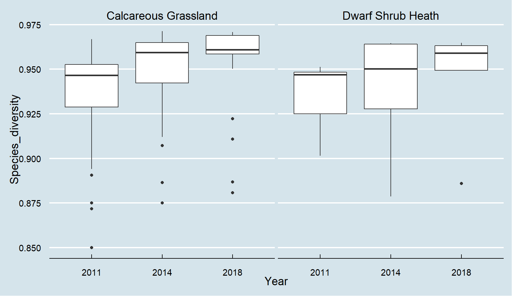
The distribution of the plot diversity scores across the major BAP broad habitats. The centre line of the box is the median value across all plots designated as that habitat. The edges of the box are the interquartile range (the range, omitting the smallest and largest quarters of the values).
| Habitat | Species_diversity |
|---|---|
| Calcareous Grassland | 0.9 |
| Dwarf Shrub Heath | 0.8 |
Map showing where changes are located. Each year shows the change from the last survey across each plot, with purple markers indicating a reduction and yellow markers indicating an increase.
This map shows a darker shade of blue for more litter/bare ground and higher plant height. Only plots from the most recent survey are included on this map. Vegetation height is an average across the whole plot. Litter and Bare ground is measured out of 25 and is the recording of presence or absence in each of the 25 quadrat subdivisions.
The vegetation height in a plot is measured by placing a disk ontop of the sward and letting it fall until it is supported by the vegetation. This is done in each division of the larger quadrat and the height is recorded. The average of these is then taken for each plot and is given in cm.
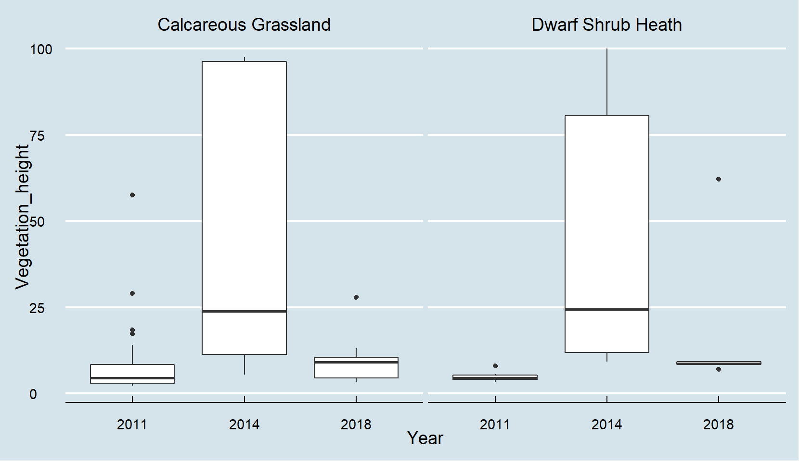
The distribution of the plot vegetation height averages across the major BAP broad habitats. The centre line of the box is the median value across all plots designated as that habitat. The edges of the box are the interquartile range (the range, omitting the smallest and largest quarters of the values).
| Habitat | Vegetation_height |
|---|---|
| Calcareous Grassland | 13.0 |
| Dwarf Shrub Heath | 23.3 |
Map showing where changes are located. Each year shows the change from the last survey across each plot, with purple markers indicating a reduction and yellow markers indicating an increase.
Presence of litter is recorded in each of the 25 subdivisions of the larger quadrat and each plot is then given an overall recording of 0-25 for presence of litter.
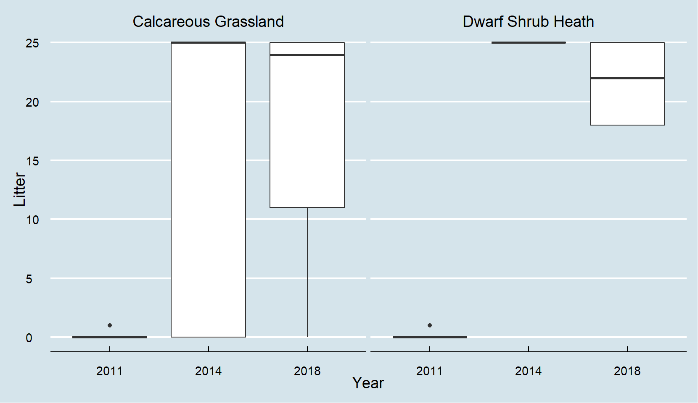
The distribution of the litter presence scores across the major BAP broad habitats. The centre line of the box is the median value across all plots designated as that habitat. The edges of the box are the interquartile range (the range, omitting the smallest and largest quarters of the values).
| Habitat | Litter |
|---|---|
| Calcareous Grassland | 11.6 |
| Dwarf Shrub Heath | 18.9 |
Map showing where changes are located. Each year shows the change from the last survey across each plot, with purple markers indicating a reduction and yellow markers indicating an increase.
Presence of bare ground is recorded in each of the 25 subdivisions of the larger quadrat and each plot is then given an overall recording of 0-25 for presence of litter.
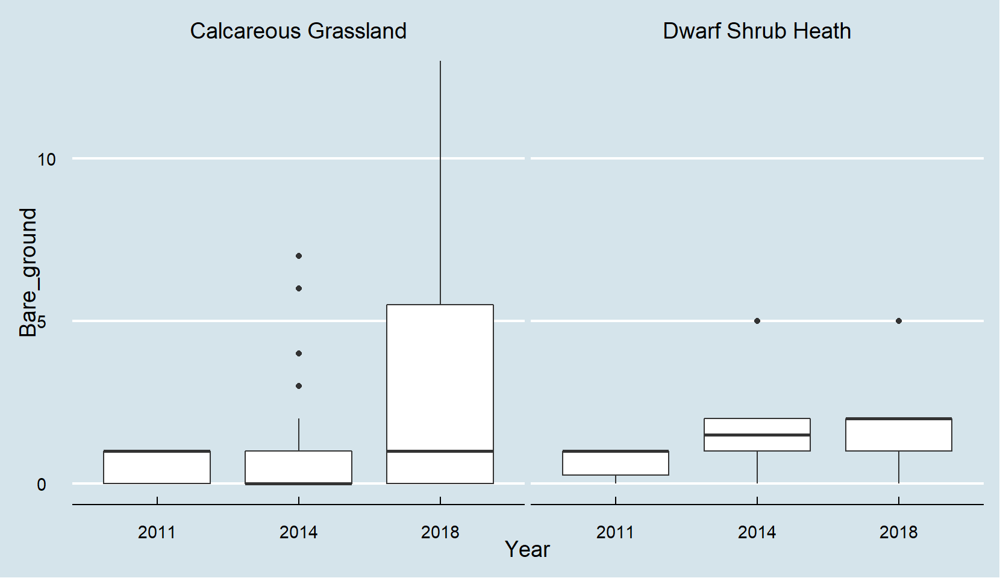
The distribution of the bare ground presence scores across the major BAP broad habitats. The centre line of the box is the median value across all plots designated as that habitat. The edges of the box are the interquartile range (the range, omitting the smallest and largest quarters of the values).
| Habitat | Bare_ground |
|---|---|
| Calcareous Grassland | 5.1 |
| Dwarf Shrub Heath | 4.3 |
Map showing where changes are located. Each year shows the change from the last survey across each plot, with purple markers indicating a reduction and yellow markers indicating an increase.
These are scores of ‘light’, ‘fertility’, ‘pH’, and ‘wetness’ for each plot, derived from the plant species present. A high wetness score means the plants in that plot favour a wet environment and a low fertility score means the plants favour an relatively infertile soil.
Ellenberg scores were first assigned by Ellenberg et al. (1991) for a large number of european flora species, based on experimental work as well as field observation. These scores were assigned using a central European environment and so were later adapted by Hill et al. (1999, 2000) for the British environment.
This map shows a darker shade of blue for higher Ellenberg scores. Only plots from the most recent survey are included on this map.
The pH scores here are not ‘pH’ but a value of alkaline preference of the plants found on the plot. They have no units and do not scale in the same way that pH scales (with 7 as neutral). Large scores mean that the plants on the plot prefer alkaline soils.
The light Ellenberg score gives an indication of how the plants on a plot favour light. A score of 1 indicates the plant prefers deep shade at all times, a score of 5 indicates semi shade and a score of 9 indicates the plant favours full light.
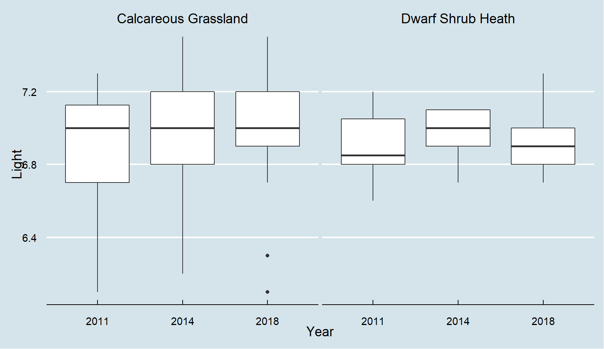
The distribution of the ‘light’ values across the major BAP broad habitats. The centre line of the box is the median value across all plots designated as that habitat. The edges of the box are the interquartile range (the range, omitting the smallest and largest quarters of the values). Plants are scored on a scale of 1-9 and this average is shown on the y-axis.
| Habitat | Light |
|---|---|
| Calcareous Grassland | 7.0 |
| Dwarf Shrub Heath | 6.8 |
Map showing where changes are located. Each year shows the change from the last survey across each plot, with purple markers indicating a reduction and yellow markers indicating an increase.
The fertility Ellenberg score gives an indication of how the plants on a plot favour nitrogen in the soil. A score of 1 indicates the plant prefers minimal levels of nitrogen, a score of 5 indicates an average favourability and a score of 9 indicates the plant favours excessive supply.
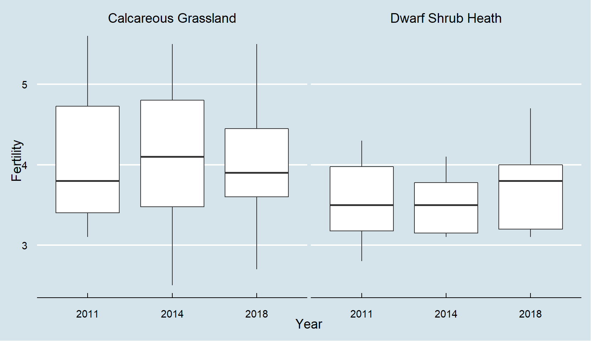
The distribution of the ‘fertility’ values across the major BAP broad habitats. The centre line of the box is the median value across all plots designated as that habitat. The edges of the box are the interquartile range (the range, omitting the smallest and largest quarters of the values). Plants are scored on a scale of 1-9 and this average is shown on the y-axis.
| Habitat | Fertility |
|---|---|
| Calcareous Grassland | 3.7 |
| Dwarf Shrub Heath | 2.2 |
Map showing where changes are located. Each year shows the change from the last survey across each plot, with purple markers indicating a reduction and yellow markers indicating an increase.
A score of 1 indicates the plant prefers extremely acidic soils, a score of 5 means mildly acidic conditions are preferred, and a score of 9 indicates the plant favours alkaline soils.
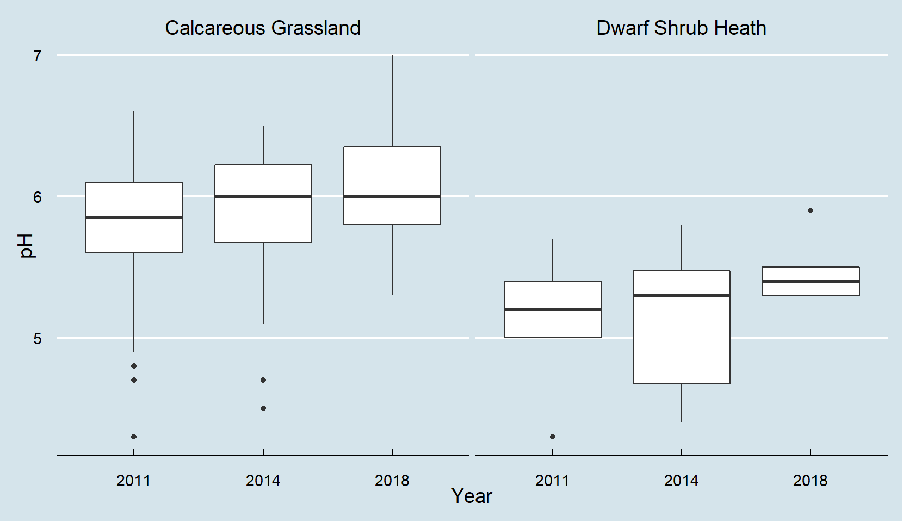
The distribution of the ‘pH’ values across the major BAP broad habitats. The centre line of the box is the median value across all plots designated as that habitat. The edges of the box are the interquartile range (the range, omitting the smallest and largest quarters of the values). Plants are scored on a scale of 1-9 and this average is shown on the y-axis.
| Habitat | pH |
|---|---|
| Calcareous Grassland | 6.2 |
| Dwarf Shrub Heath | 2.6 |
Map showing where changes are located. Each year shows the change from the last survey across each plot, with purple markers indicating a reduction and yellow markers indicating an increase.
The wetness Ellenberg score gives an indication of how the plants in the plot prefer the wetness of the soil. A score of 1 indicates dry soil is preferred, 5 would indicate the plants favour a moist soil, 9 suggest wet soil is preferred and a score of 10-12 indicates the plant favours underwater conditions.
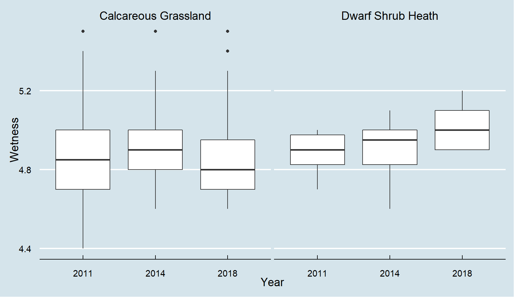
The distribution of the ‘wetness’ values across the major BAP broad habitats. The centre line of the box is the median value across all plots designated as that habitat. The edges of the box are the interquartile range (the range, omitting the smallest and largest quarters of the values). Plants are scored on a scale of 1-12 and this average is shown on the y-axis.
| Habitat | Wetness |
|---|---|
| Calcareous Grassland | 4.8 |
| Dwarf Shrub Heath | 6.1 |
Map showing where changes are located. Each year shows the change from the last survey across each plot, with purple markers indicating a reduction and yellow markers indicating an increase.
Universal adaptive strategy theory (UAST) is a method of categorising plants according to their survival strategy. There are three main ways in which a plant can specialise in order to take advantage of its environment. The first is by taking advantage of available resources and maximising acquisition at the expense of competitors. Plants are given a ‘competition’ score to represent the extent to which they use this strategy. The second is by being able to deal with a small amount of resources while other species are not able to maintain in such a stressful environment. Plants are given a ‘stress’ tolerator score to represent the extent to which they use this strategy. The third and final strategy is a rapid completion of the life-cycle, which can be advantageous in environments where events are frequently lethal to the plant. Plants are given a ‘ruderals’ score to represent the extent to which they use this strategy.
A large number of British species were placed in this triangle with assigned scores for stress, competition and ruderals by Grime et al. (1988, 1995)
Individual plots have been taken and the average ‘stress’, ‘competition’ and ‘ruderals’ scores are calculated. This map shows a darker shade of blue for higher Grime’s scores. Only plots from the most recent survey are included on this map.
Plants with a high competition score thrive in environments with low disturbance and low intensity stress. They are able to outcompete other plants for the most valuable resources through rapid growth, physical spread and a high capacity for phenotype plasticity (enabling them to adapt to seasons and changing availability of resources).
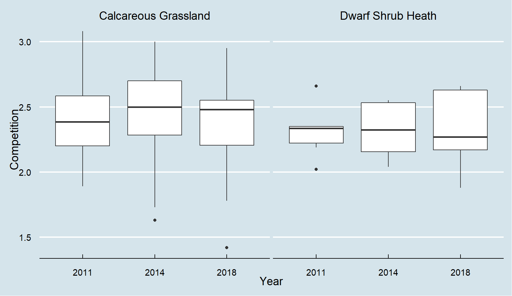
The distribution of the ‘competition’ values across the major BAP broad habitats. The centre line of the box is the median value across all plots designated as that habitat. The edges of the box are the interquartile range (the range, omitting the smallest and largest quarters of the values). Plants are scored on a scale of 1-5 and this average is shown on the y-axis.
| Habitat | Competition |
|---|---|
| Calcareous Grassland | 2.2 |
| Dwarf Shrub Heath | 2.8 |
Map showing where changes are located. Each year shows the change from the last survey across each plot, with purple markers indicating a reduction and yellow markers indicating an increase.
Plants with a high stress score have adapted to live in highly stressful environments such as alpine or arid habitats, deep shade, nutrient poor soils or areas with extreme pH levels. They are slow growing plants with high nutrient retention and do not do well with lots of disturbance.
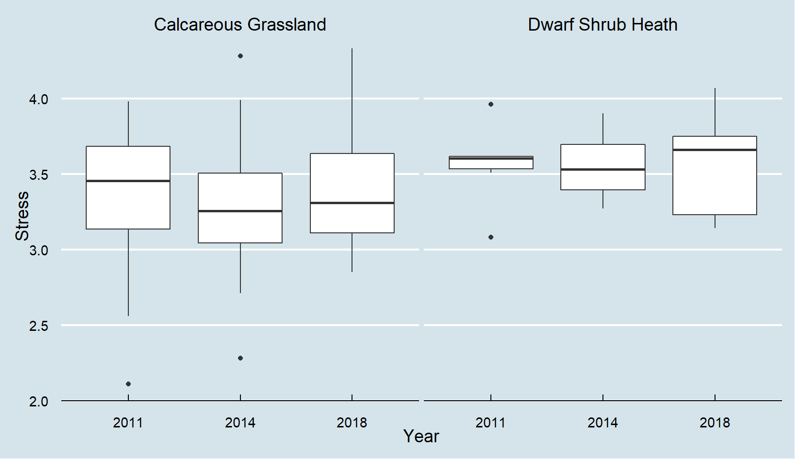
The distribution of the ‘stress’ values across the major BAP broad habitats. The centre line of the box is the median value across all plots designated as that habitat. The edges of the box are the interquartile range (the range, omitting the smallest and largest quarters of the values). Plants are scored on a scale of 1-5 and this average is shown on the y-axis.
| Habitat | Stress |
|---|---|
| Calcareous Grassland | 3.5 |
| Dwarf Shrub Heath | 3.2 |
Map showing where changes are located. Each year shows the change from the last survey across each plot, with purple markers indicating a reduction and yellow markers indicating an increase.
Ruderals thrive in low stress environments but with lots of disturbance. They will quickly complete their lifecycle and often release a large amount of seed. Plants that have adapted to this strategy are often found in recently disturbed land and are often annuals.
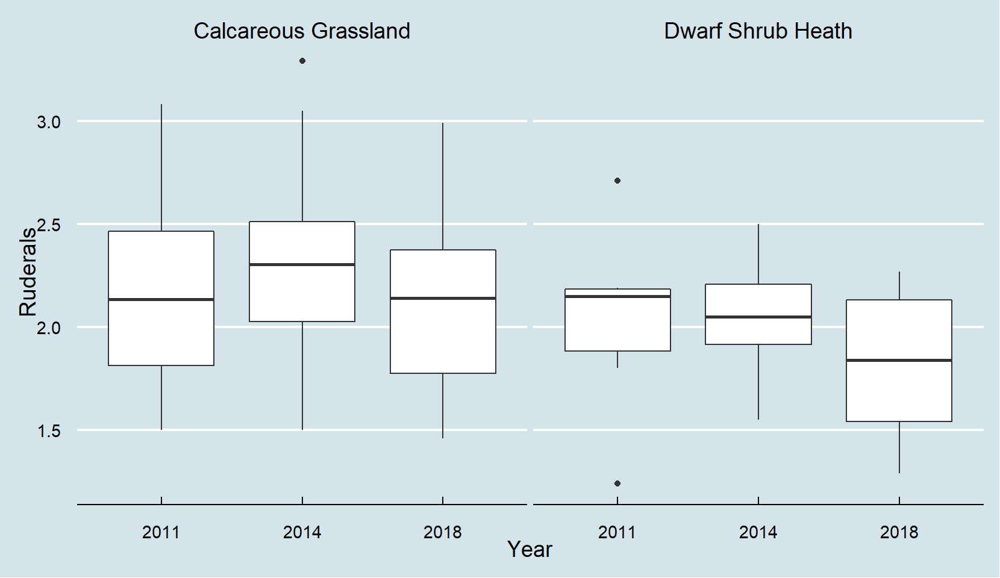
The distribution of the ‘ruderals’ values across the major BAP broad habitats. The centre line of the box is the median value across all plots designated as that habitat. The edges of the box are the interquartile range (the range, omitting the smallest and largest quarters of the values). Plants are scored on a scale of 1-5 and this average is shown on the y-axis.
| Habitat | Ruderals |
|---|---|
| Calcareous Grassland | 2.0 |
| Dwarf Shrub Heath | 1.1 |
Map showing where changes are located. Each year shows the change from the last survey across each plot, with purple markers indicating a reduction and yellow markers indicating an increase.
For more information contact the LTMN team:
Project manager - kate.fagan@naturalengland.org.uk
Vegetation lead - sarah.grinsted@naturalengland.org.uk
Author and analyst - kieran.fox@naturalengland.org.uk
We are happy to provide explanations as well as further analysis.
Ellenberg, H., Weber, H.E., Dull, R., Wirth, V., Werner, W., Paulissen, D. (1991). Zeigerwerte von Pflanzen in Mitteleuropa. Scripta Geobotanica. 18, 1-248
Hill, M.O., Mountford, J.O., Roy, D.B., Bunce, R.G.H. (1999) Ellenberg’s indicator values for British plants: Ecofact Volume 2, Technical Annex. ITE Monkswood & ITE Grange-over-Sands. Centre for Ecology & Hydrology and Natural Environment Research Council
Hill M.O., Roy D.B., Mountford J.O. & Bunce R.G.H. 2000. Extending Ellenberg’s indicator values to a new area: an algorithmic approach. J. Appl. Ecol. 37: 3-15
Comparative Plant Ecology: A Functional Approach to Common British Species, Authors: Grime, J.P., Hodgson, J.G., Hunt, R.
Grime, J.P., Hodgson, J.G., Hunt, R. & Thompson, K. (1995). The Electronic Comparative Plant Ecology. London. Chapman & Hall